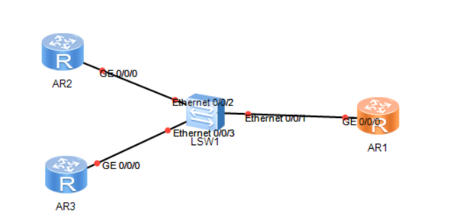

第一章 ensp与vrp的基础操作
内容描述
实例详情
实验说明：配置telnet登录，使得可以通过ar1上的telnet进行远程访问
拓扑图：
编址：
| 设备 | 接口 | IP地址 | 子网掩码 | 默认网关 |
|---|---|---|---|---|
| ar1 | g0/0/0 | 10.1.1.254 | 24 | - |
| ar2 | g0/0/0 | 10.1.1.1 | 24 | 10.1.1.254 |
| ar3 | g0/0/0 | 10.1.1.20 | 24 | 10.1.1.254 |
配置过程：
1.先将计划的IP地址分配到相应的设备和对应端口上，完成之后测试联通性
<Huawei>
Apr 13 2022 09:54:12-08:00 Huawei %%01IFPDT/4/IF_STATE(l)[0]:Interface GigabitEt
hernet0/0/0 has turned into UP state.
<Huawei>sys
Enter system view, return user view with Ctrl+Z.
[Huawei]int g0/0/0
[Huawei-GigabitEthernet0/0/0]ip add 10.1.1.254 24
Apr 13 2022 09:55:10-08:00 Huawei %%01IFNET/4/LINK_STATE(l)[1]:The line protocol
IP on the interface GigabitEthernet0/0/0 has entered the UP state.
[Huawei-GigabitEthernet0/0/0]
ar2与ar3配置命令相似
2.配置telnet登录验证
<Huawei>sys
Enter system view, return user view with Ctrl+Z.
[Huawei]user-inter
[Huawei]user-interface vty 0 4
[Huawei-ui-vty0-4]aut
[Huawei-ui-vty0-4]authentication-mode pass
[Huawei-ui-vty0-4]authentication-mode password
Please configure the login password (maximum length 16):huawei
[Huawei-ui-vty0-4]q
[Huawei]
这时通过其他两个任何一个路由器输入telnet 10.1.1.254，并输入密码，即可进入ar1的做界面
如果分不清到底是不是ar1的路由器，可以先将ar1路由器内的名称改为ar1，先进入配置视图（[Huawei]）然后输入sysname 名称。
第二章 交换机基础配置
内容描述
实例详情
实验说明：三台交换机，1和2是接入，3是汇聚，交换机之间使用全双工，并配置接口速率
拓扑图：
编址：
| 设备 | 接口 | IP地址 | 子网掩码 | 默认网关 |
|---|---|---|---|---|
| pc1 | e0/0/1 | 10.1.1.1 | 24 | - |
| pc2 | e0/0/1 | 10.1.1.2 | 24 | - |
配置过程：
先为PC配置好IP地址和子网掩码，并在其中一台pc机ping另一台pc机的IP地址，检查连通性
接下来配置交换机
1.配置交换机双工模式
配置前，由于交换机的自协商协议默认为开启状态，需先将该协议关闭，在进行配置
<Huawei>sys
Enter system view, return user view with Ctrl+Z.
[Huawei]int g0/0/1
[Huawei-GigabitEthernet0/0/1]undo ne
[Huawei-GigabitEthernet0/0/1]undo negotiation au
[Huawei-GigabitEthernet0/0/1]undo negotiation auto
[Huawei-GigabitEthernet0/0/1]dupl
[Huawei-GigabitEthernet0/0/1]duplex
Apr 13 2022 11:11:22-08:00 Huawei DS/4/DATASYNC_CFGCHANGE:OID 1.3.6.1.4.1.2011.5.25.191.3.1 configurations have been changed. The current change number is 4, the change loop count is 0, and the maximum number of records is 4095.fu
[Huawei-GigabitEthernet0/0/1]duplex full
[Huawei-GigabitEthernet0/0/1]
Apr 13 2022 11:11:32-08:00 Huawei DS/4/DATASYNC_CFGCHANGE:OID 1.3.6.1.4.1.2011.5.25.191.3.1 configurations have been changed. The current change number is 5, the change loop count is 0, and the maximum number of records is 4095.
[Huawei-GigabitEthernet0/0/1]
上下的三个端口分别配置此命令，至此，交换机间的工作模式全部切换为了全双工。
2.配置接口速率
由于用户（PC）较少，所以将GE口配置为100mbit/s，e口配置为10Mbit/s；配置前，由于交换机的自协商协议默认为开启状态，需先将该协议关闭，在进行配置
<Huawei>sys
Enter system view, return user view with Ctrl+Z.
[Huawei]sys s1
[s1]int
Apr 13 2022 11:22:42-08:00 s1 DS/4/DATASYNC_CFGCHANGE:OID 1.3.6.1.4.1.2011.5.25.191.3.1 configurations have been changed. The current change number is 6, the change loop count is 0, and the maximum number of records is 4095.e0/0/1
[s1-Ethernet0/0/1]un
[s1-Ethernet0/0/1]undo ne
[s1-Ethernet0/0/1]undo negotiation au
[s1-Ethernet0/0/1]undo negotiation auto
[s1-Ethernet0/0/1]sp
[s1-Ethernet0/0/1]speed
Apr 13 2022 11:23:02-08:00 s1 DS/4/DATASYNC_CFGCHANGE:OID 1.3.6.1.4.1.2011.5.25.191.3.1 configurations have been changed. The current change number is 7, the change loop count is 0, and the maximum number of records is 4095.10
[s1-Ethernet0/0/1]
Apr 13 2022 11:23:12-08:00 s1 DS/4/DATASYNC_CFGCHANGE:OID 1.3.6.1.4.1.2011.5.25.191.3.1 configurations have been changed. The current change number is 8, the change loop count is 0, and the maximum number of records is 4095.
[s1-Ethernet0/0/1]int g0/0/1
[s1-GigabitEthernet0/0/1]
注意每一个端口都要单独关掉
二、arp与proxy arp
实验说明：r1，s1，s2，配置静态arp且在路由器上配置arp代理
拓扑图：
编址：
| 设备 | 接口 | IP地址 | 子网掩码 | 默认网关 |
|---|---|---|---|---|
| r1 | g0/0/1 | 10.1.1.254 | 24 | - |
| r1 | g0/0/2 | 10.2.254 | 24 | - |
| pc1 | e0/0/1 | 10.1.1.1 | 16 | - |
| pc2 | e0/0/1 | 10.1.1.2 | 16 | - |
| pc3 | e0/0/1 | 10.1.2.3 | 16 | - |
配置过程：
按照编址表将IP地址配置到各个位置，
配置静态arp
[r1]arp static 10.1.1.1 5489-983D-766A
[r1]arp static 10.1.1.2 5489-9857-45FC
[r1]arp static 10.1.2.3 5489-9812-085E
[r1]
配置proxy arp
华为交换机默认代理arp是关闭状态，上面的两个网段是不能相互访问的，需要将对应网段接口的代理arp打开
[r1]int g0/0/1
[r1-GigabitEthernet0/0/1]arp-pr
[r1-GigabitEthernet0/0/1]arp-proxy en
[r1-GigabitEthernet0/0/1]arp-proxy enable
[r1-GigabitEthernet0/0/1]int g0/0/2
[r1-GigabitEthernet0/0/2]arp-pr
[r1-GigabitEthernet0/0/2]arp-proxy
[r1-GigabitEthernet0/0/2]arp-proxy en
[r1-GigabitEthernet0/0/2]
这样10.1.1.0网段就能和10.1.2.0网段通信了